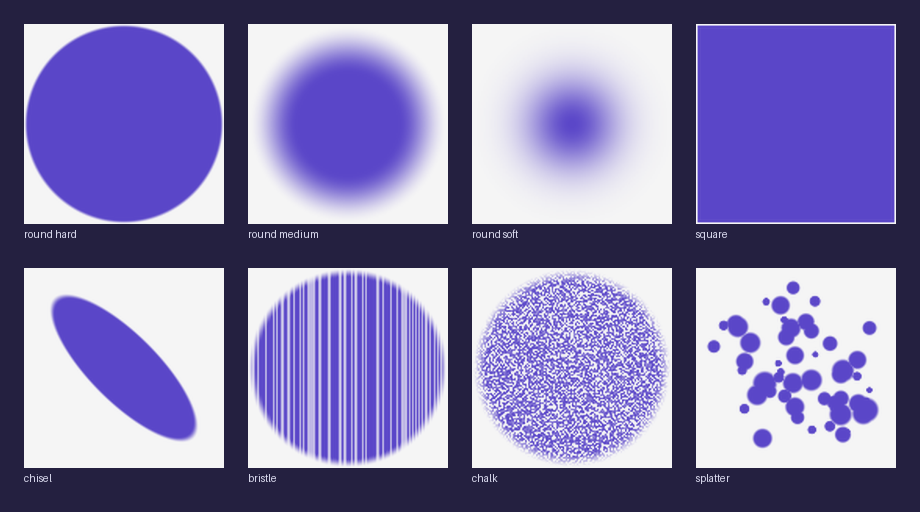

OpenGL Paint Application
C++17 · OpenGL / GLUT · CMake · stb_image — 2026, in progress.
A Paint-style drawing application written from scratch in C++: a CPU canvas streamed to an OpenGL texture, a brush system with eight brush tips, undo/redo, and zoom and pan.
Brush system

- An abstract
Brushinterface ("apply one dab to the canvas") with two implementations: MaskBrush, driven by a grayscale opacity mask loaded with stb_image, and SoftBrush, a procedural round brush with adjustable hardness. - The eight tips (hard/medium/soft round, square, chisel, bristle, chalk, splatter) are generated procedurally by a small Python/NumPy script (smoothstep edges, Gaussian falloff, seeded noise).
- Strokes place dabs along each mouse segment at a spacing proportional to brush size, and carry the leftover distance between segments, so spacing stays even however the mouse events arrive.
- Each dab is clipped to the canvas once rather than per pixel, and blending rounds instead of truncating, so many low-opacity dabs don't drift darker.
Rendering
- The canvas is an RGB buffer on the CPU, displayed as a textured quad with an orthographic projection.
- The canvas tracks a dirty rectangle of everything changed since the last frame, and only that region is re-uploaded with
glTexSubImage2Dinstead of the whole image. - Zoom, panning and window resize keep the view clamped to the canvas.
Undo / redo with minimal memory
- Each edit (a stroke, a clear) becomes one history entry storing only the smallest rectangle that changed, as it was before the edit.
- Undo and redo swap that rectangle with the canvas, so a single buffer serves both directions.
- History is capped by both step count and total bytes, and a new edit discards the redo stack.
Architecture
| File | Role |
|---|---|
| app.cpp / app.h | GLUT callbacks, view (zoom/pan), input routing |
| canvas.cpp / canvas.h | Pixel buffer, stroke spacing, dirty-rectangle tracking |
| brush.cpp / brush.h | Abstract brush, mask and procedural brushes, blending |
| brush_library.cpp | Loads the brush tips from assets |
| history.cpp / history.h | Rectangle-patch undo/redo with memory limits |
| panel.cpp / tool_state.cpp | Tool panel UI (colours, eraser, size, brush) and selected-tool state |
| tools/generate_brushes.py | Procedural brush-tip generation (NumPy, Pillow) |